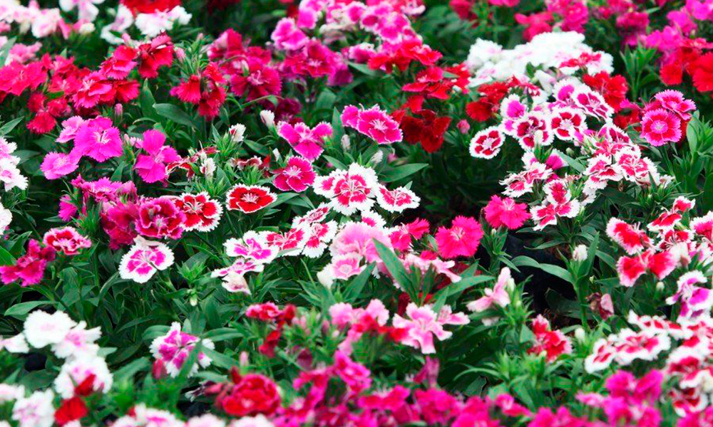
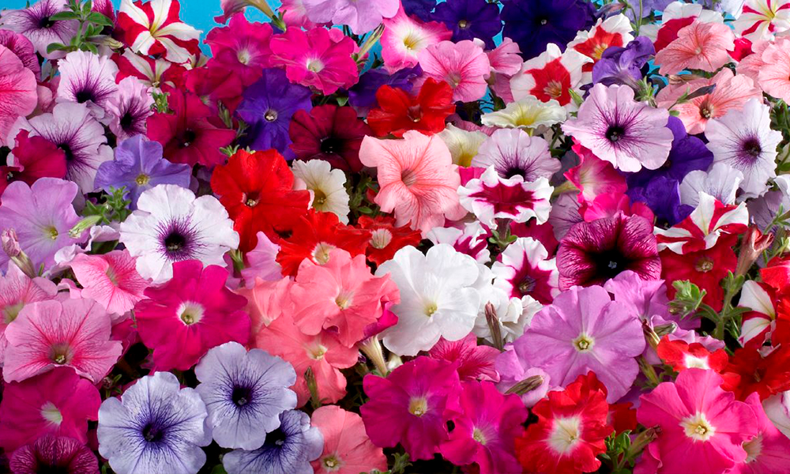

Топ однорічних квітів
 Такі однорічні квіти, насіння яких слід висівати на розсаду, люблять тепло і сонце.
Тому розсаду пересаджують на клумбу у травні, коли немає загрози заморозків.
Висівати насіння можна і відразу в ґрунт, але так є ризик, що рослини замерзнуть.
Тому розсадний спосіб є надійнішим.

Портулак зовсім не примхливий, полив важливий, коли стоїть спека і земля суха.
Щодо підживлення, рослина добре росте і без них, але якщо ви вирішили внести добрива, гірше від цього точно не буде.
Отримати квітучий сад чи клумбу в домашніх умовах дуже просто.
Для цього слід обрати свої улюблені однорічні квіти і висадити так, як вам подобається.
Завдяки тому, що однорічники цвітуть довго і рясно, біля дому у вас завжди буде приємно пахнути літніми квітами.
Однорічні квіти люблять вирощувати садівники і дачники. Квіти, що цвітуть усе літо — ось як можна описати усі однорічники.
Жодна багаторічна культура не здатна позмагатися з ними у тривалості цвітіння. Насолоджуватися цвітінням однорічних культур можна усе літо аж до осінніх заморозків.
Ще одна особливість однорічників — простота в догляді. Вирощувати однорічні квіти можна навіть безрозсадним способом.
Насіння просто висівають на клумби, щоб не мати клопоту з розсадою. Однак якщо ви хочете отримати перші квітки якомога раніше, без вирощування розсади не обійтися.
Яким би способом ви не вирішили вирощувати квіти–однорічники, варто спершу визначитися, які саме культури ви би хотіли бачити на клумбі.